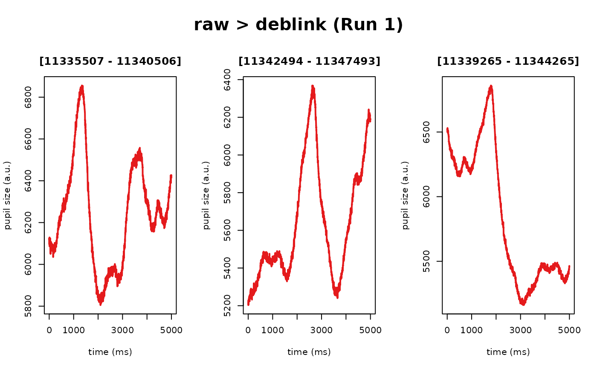
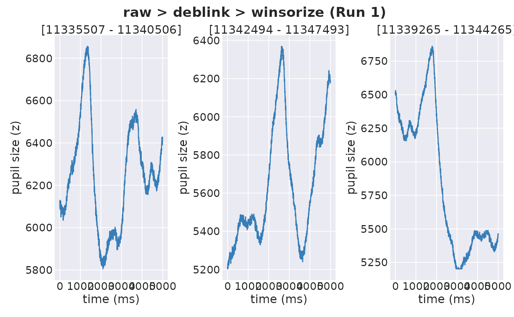

Build a generic operation (extension) for the eyeris pipeline
Source: R/pipeline-handler.R
pipeline_handler.Rdpipeline_handler enables flexible integration of custom data
processing functions into the eyeris pipeline. Under the hood,
each preprocessing function in eyeris is a wrapper around a
core operation that gets tracked, versioned, and stored using this
pipeline_handler method. As such, custom pipeline steps must conform
to the eyeris protocol for maximum compatibility with the downstream
functions we provide.
Arguments
- eyeris
An object of class
eyeriscontaining time series data in a list of data frames (one per block), various metadata collected by the tracker, andeyerisspecific pointers for tracking the preprocessing history for that specific instance of theeyerisobject- operation
The name of the function to apply to the time series data. This custom function should accept a data frame
x, a stringprev_op(i.e., the name of the previous pupil column – which you DO NOT need to supply as a literal string as this is inferred from thelatestpointer within theeyerisobject), and any custom parameters you would like- new_suffix
A character string indicating the suffix you would like to be appended to the name of the previous operation's column, which will be used for the new column name in the updated preprocessed data frame(s)
- ...
Additional (optional) arguments passed to the
operationmethod
Value
An updated eyeris object with the new column added to the
timeseries data frame and the latest pointer updated to the name of the
most recently added column plus all previous columns (ie, the history "trace"
of preprocessing steps from start-to-present)
Details
Following the eyeris protocol also ensures:
all operations follow a predictable structure, and
that new pupil data columns based on previous operations in the chain are able to be dynamically constructed within the core time series data frame.
See also
For more details, please check out the following vignettes:
Anatomy of an eyeris Object
vignette("anatomy", package = "eyeris")
Building Your Own Custom Pipeline Extensions
Examples
# first, define your custom data preprocessing function
winsorize_pupil <- function(x, prev_op, lower = 0.01, upper = 0.99) {
vec <- x[[prev_op]]
q <- quantile(vec, probs = c(lower, upper), na.rm = TRUE)
vec[vec < q[1]] <- q[1]
vec[vec > q[2]] <- q[2]
vec
}
# second, construct your `pipeline_handler` method wrapper
winsorize <- function(eyeris, lower = 0.01, upper = 0.99, call_info = NULL) {
# create call_info if not provided
call_info <- if (is.null(call_info)) {
list(
call_stack = match.call(),
parameters = list(lower = lower, upper = upper)
)
} else {
call_info
}
# handle binocular objects
if (eyeris:::is_binocular_object(eyeris)) {
# process left and right eyes independently
left_result <- eyeris$left |>
pipeline_handler(
winsorize_pupil,
"winsorize",
lower = lower,
upper = upper,
call_info = call_info
)
right_result <- eyeris$right |>
pipeline_handler(
winsorize_pupil,
"winsorize",
lower = lower,
upper = upper,
call_info = call_info
)
# return combined structure
list_out <- list(
left = left_result,
right = right_result,
original_file = eyeris$original_file,
raw_binocular_object = eyeris$raw_binocular_object
)
class(list_out) <- "eyeris"
return(list_out)
} else {
# regular eyeris object, process normally
eyeris |>
pipeline_handler(
winsorize_pupil,
"winsorize",
lower = lower,
upper = upper,
call_info = call_info
)
}
}
# and voilà, you can now connect your custom extension
# directly into your custom `eyeris` pipeline definition!
custom_eye <- system.file("extdata", "memory.asc", package = "eyeris") |>
eyeris::load_asc(block = "auto") |>
eyeris::deblink(extend = 50) |>
winsorize()
plot(custom_eye, seed = 1)
#> ℹ [2025-08-05 09:22:43] [INFO] Plotting block 1 with sampling rate 1000 Hz from
#> possible blocks: 1

